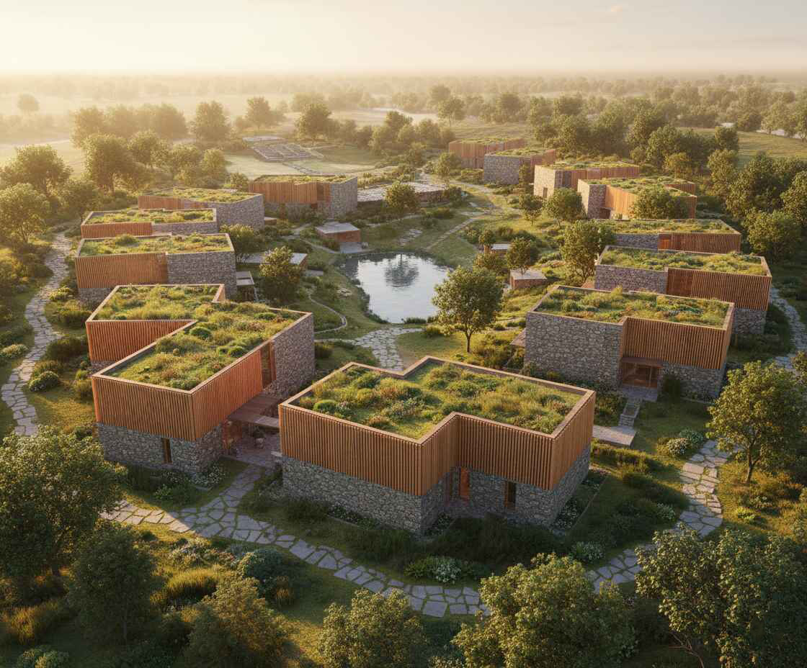
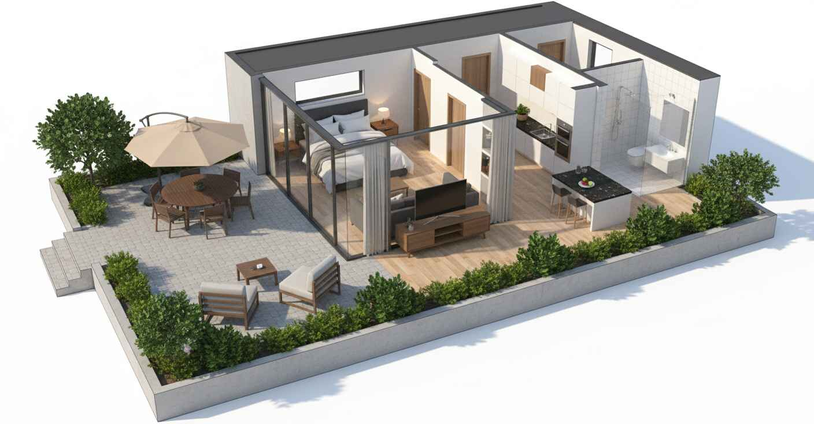
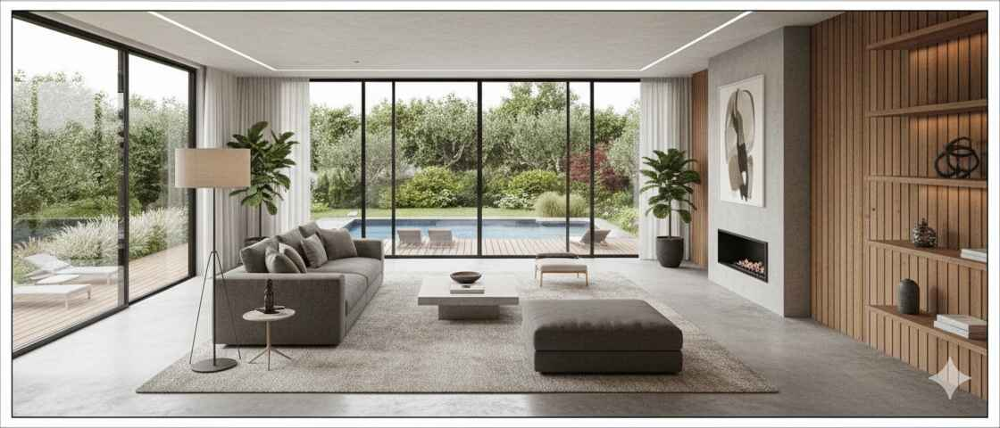
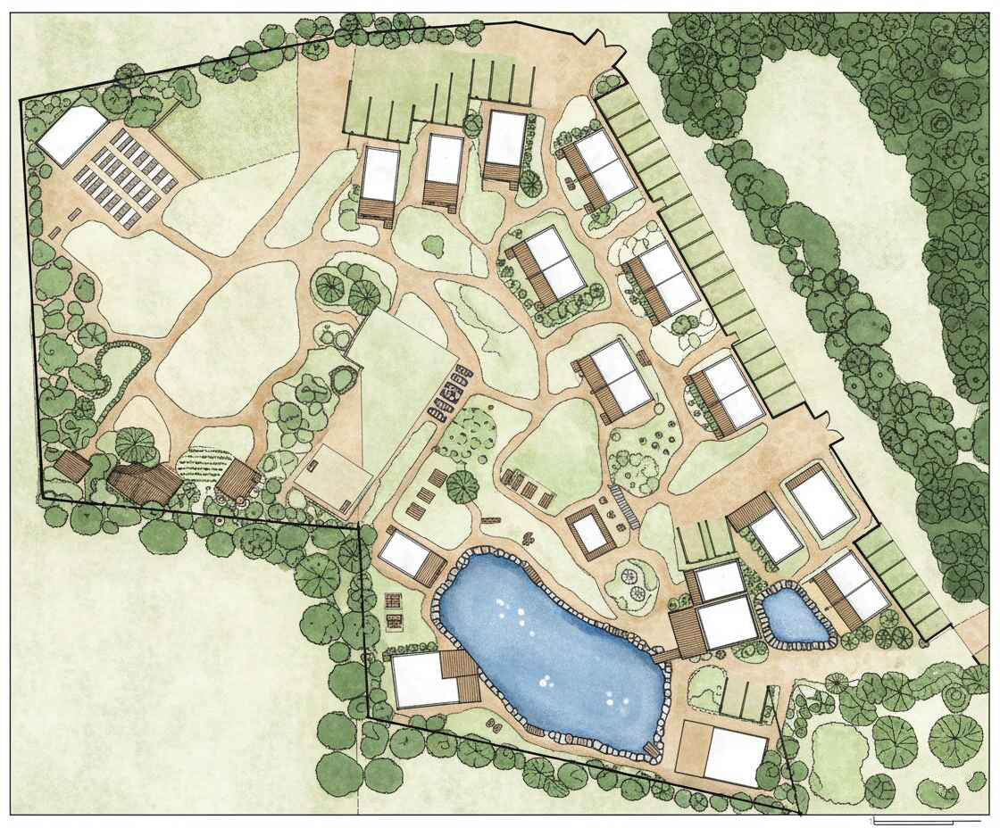
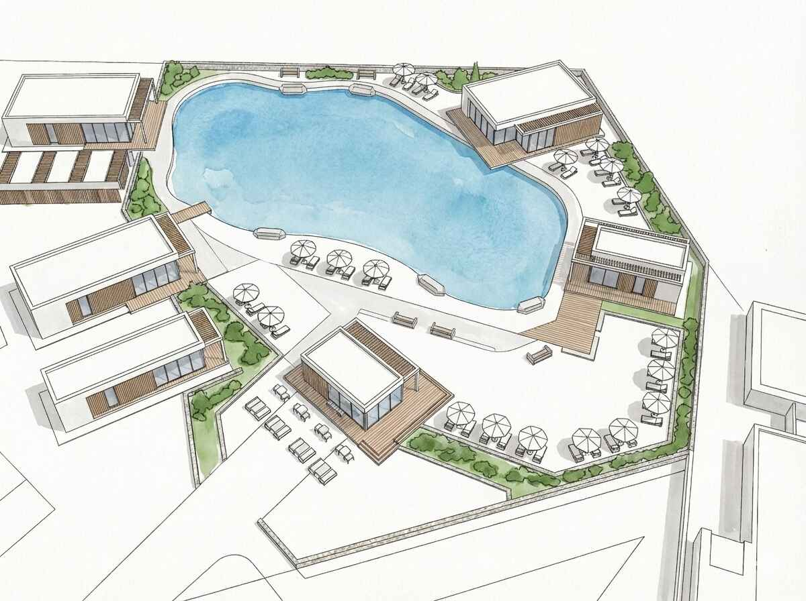

Природа, атмосфера та спокій
Це місце — справжній рай для тих, хто шукає спокою, натхнення та єдності з природою. Ділянки розташовані на затишній галявині, повністю оточеній сосновим лісом, де панує чисте лісове повітря, яке наповнює силами та здоров'ям, тиша та природна енергія — саме те, що шукають гості заміських комплексів або поціновувачі усамітнення.
Поруч протікає чудова мальовнича річка, що додає цьому місцю особливого шарму та відкриває широкі можливості:
- Прогулянки вздовж берега та зони природного релаксу;
- Риболовля чи просто насолода видом на воду;
- Організація власного озера зі своїм рибним господарством (форель, лосось та інше).
«Тут можна проводити ретріти, медитуючи під шепіт сосен, відчувати внутрішній баланс. Зустрічати мальовничі заходи сонця, насолоджуючись тишею та красою навколишнього світу. Займатись творчістю або іншою діяльністю, яка надихає вас у цьому спокійному та енергетично наповненому місці.»

Будівля на ділянці
На ділянці розміщено тимчасову будівлю (59 кв. м), яка може бути використана як додаткове бонусне технічне приміщення або, якщо потреба відсутня, її може бути демонтовано.
Локація з великим потенціалом для бізнесу або бази відпочинку
Ви можете розмістити свій власний бізнес: ділянка не має межових сусідів. Це відкриває простір для втілення комерційних або приватних планів у відокремленій локації.
Це ідеальне місце для:
- Ретритів, йога- та SPA-програм;
- Еко-готелю або глемпінгу;
- Клубного заміського комплексу;
- Творчих резиденцій або приватної бази відпочинку.
Тут легко уявити вечори з видом на захід сонця та гостей, які приїжджають за тишею, природою та повним перезавантаженням.
Концептуальне рішення (дизайн-проєкт):
В наявності є розроблене концептуальне дизайнерське бачення розвитку території, яке передбачає:
- 21 будинок для гостей;
- Ресторан та бар;
- SPA-комплекс;
- Літній кінотеатр.




Переваги об’єкта та комерційні переваги
- Повна приватність — немає сусідів, ідеально для інтровертів;
- Свобода для діяльності — ділянка не має межових сусідів, що забезпечує спокій та простір для реалізації будь-яких ідей без зайвих обмежень;
- Дорога — окрема приватна дорога безпосередньо до ділянок;
- Електрика — підведено 3 фази (оформлено підключення на одній з адрес; на другій адресі електрифікація наразі відсутня, тож покупець має можливість за потреби додатково підключити ще одну окрему лінію на 3 фази);
- Вода — заведена на територію;
- Цільове призначення ділянок — дві ділянки під будівництво, дві ділянки під ведення садового господарства (+ три сінокоса);
- Правовий статус — усі документи на землю в наявності, один власник.
Це місце — ідеальний вибір для тих, хто шукає тихе та затишне місце без міської метушні.
Технічні характеристики
| Локація | 58 км від Києва, околиця х. Соколі (Березань) |
| Відстань до траси | 1,8 км від траси Київ–Полтава (Київ–Яготин) |
| Склад масиву | 1,2 га (4 ділянки + 3 сінокоса) |
| Цільове призначення | 2 під будівництво, 2 під садівництво (+ 3 сінокоса) |
| Власність | Один власник, усі документи в наявності |
| Електроенергія | 3 фази підключено (є можливість підключення 3 фаз на 2-гу адресу) |
| Водопостачання | Підведено на ділянку |
| Під'їзні шляхи | Окрема приватна дорога |
| Будівля | Тимчасова будівля 59 м² (бонусне техприміщення або демонтаж) |
| Проєктне бачення | В наявності концептуальне рішення (дизайн-проєкт) |
Огляд та зв'язок
Не втрачайте шанс інвестувати в унікальну локацію з готовим потенціалом для бази відпочинку або прибуткового бізнесу!